Advanced: How pipelines can modify themselves at runtime
Source:vignettes/self-modify-pipeline.Rmd
self-modify-pipeline.RmdWhile the pipeflow package mostly aims to be an easy and
intuitive framework, it does provide some very advanced features and
interfaces that allow for a very flexible manipulation of the pipeline
objects. In this vignette we will introduce some of these features using
simple examples in order to give you an idea of what is possible.
Changing pipeline parameters at runtime
Let’s first define a pipeline, which fits a linear model, checks it’s residuals for normality using the Shapiro-Wilk test, and plots the residuals.
library(pipeflow)
library(ggplot2)
pip <- pipe_new("my-pipeline") |>
pipe_add(
"fit",
function(data = ~data, xVar = "x", yVar = "y")
{
lm(paste(yVar, "~", xVar), data = data)
}
) |>
pipe_add(
"residual_shapiro_p_value",
function(fit = ~fit)
{
residuals <- residuals(fit)
p <- shapiro.test(residuals)$p.value
p
},
keepOut = TRUE
) |>
pipe_add(
"plot",
function(fit = ~fit, pointColor = "black")
{
data <- data.frame(
fitted = predict(fit),
residuals = residuals(fit)
)
ggplot(data, aes(x = fitted, y = residuals)) +
geom_point(shape = 21, color = pointColor) +
geom_hline(yintercept = 0, linetype = "dashed") +
theme_minimal()
},
keepOut = TRUE
)So our pipeline looks like this
pip
# step depends out keepOut group state
# <char> <list> <list> <lgcl> <char> <char>
# 1: data [NULL] FALSE data New
# 2: fit data [NULL] FALSE fit New
# 3: residual_shapiro_p_value fit [NULL] TRUE residual_shapiro_p_value New
# 4: plot fit [NULL] TRUE plot Newand we can run it like this
pip$set_data(airquality)
pip$set_params(list(xVar = "Ozone", yVar = "Temp"))
pip$run()$collect_out()
# INFO [2024-12-01 17:14:02.986] Start run of 'my-pipeline' pipeline:
# INFO [2024-12-01 17:14:03.016] Step 1/4 data
# INFO [2024-12-01 17:14:03.030] Step 2/4 fit
# INFO [2024-12-01 17:14:03.048] Step 3/4 residual_shapiro_p_value
# INFO [2024-12-01 17:14:03.050] Step 4/4 plot
# INFO [2024-12-01 17:14:03.065] Finished execution of steps.
# INFO [2024-12-01 17:14:03.066] Done.
# $residual_shapiro_p_value
# [1] 0.00022598
#
# $plot
Now let’s imagine, we want to change the color of the points in the
plot depending on the Shapiro-Wilk test result. The obvious way to do
this would be to change the plot step by passing the test
result to the plot step function and change the color
there.
However, here we are interested in another way that would keep the
plot function unchanged. For example, we could run the
pipeline a second time as follows:
if (pip$get_out("residual_shapiro_p_value") < 0.05) {
pip$set_params(list(pointColor = "red"))
pip$run()$collect_out()
}
# INFO [2024-12-01 17:14:03.468] Start run of 'my-pipeline' pipeline:
# INFO [2024-12-01 17:14:03.469] Step 1/4 data - skip 'done' step
# INFO [2024-12-01 17:14:03.470] Step 2/4 fit - skip 'done' step
# INFO [2024-12-01 17:14:03.471] Step 3/4 residual_shapiro_p_value - skip 'done' step
# INFO [2024-12-01 17:14:03.472] Step 4/4 plot
# INFO [2024-12-01 17:14:03.486] Finished execution of steps.
# INFO [2024-12-01 17:14:03.487] Done.
# $residual_shapiro_p_value
# [1] 0.00022598
#
# $plot
As was mentioned in another vignette, this solution is not ideal, as it requires to run additional code outside the pipeline framework. To solve this issue, we therefore basically have to set the parameter from within the pipeline during execution. That is, we have to make the pipeline aware of itself, which can be done by passing the pipeline object as a parameter.
Let’s update the residual_shapiro_p_value step in the
above example.
pip$replace_step(
"residual_shapiro_p_value",
function(
fit = ~fit,
.self = NULL
) {
residuals <- residuals(fit)
p <- shapiro.test(residuals)$p.value
if (!is.null(.self) && p < 0.05) {
.self$set_params(list(pointColor = "red"))
}
p
},
keepOut = TRUE
)Now we just have to make sure to set the .self
parameter.
pip$set_data(airquality)
pip$set_params(list(xVar = "Ozone", yVar = "Temp", .self = pip))
pip$run()$collect_out()
# INFO [2024-12-01 17:14:03.788] Start run of 'my-pipeline' pipeline:
# INFO [2024-12-01 17:14:03.789] Step 1/4 data
# INFO [2024-12-01 17:14:03.791] Step 2/4 fit
# INFO [2024-12-01 17:14:03.796] Step 3/4 residual_shapiro_p_value
# INFO [2024-12-01 17:14:03.800] Step 4/4 plot
# INFO [2024-12-01 17:14:03.807] Finished execution of steps.
# INFO [2024-12-01 17:14:03.808] Done.
# $residual_shapiro_p_value
# [1] 0.00022598
#
# $plot
This simple “trick” opens up a wide range of possibilities for pipeline modifications at runtime. As we will show in the next section, this is not limited to changing parameters but can also be used to modify the pipeline structure itself.
Changing the pipeline structure at runtime
Subsequently, the pipeline steps will be comprised only of very basic functions in order to keep the examples simple. The focus here is on the pipeline structure and how it can be modified at runtime.
pip <- pipe_new("my-pipeline") |>
pipe_add(
"f1",
function(x = ~data) {
x + 1
}
) |>
pipe_add(
"f2",
function(x = ~f1) {
x + 2
}
) |>
pipe_add(
"f3",
function(x = ~f2) {
x + 3
}
)This pipeline just adds 1, 2, and 3 to the input data, respectively.
pip$set_data(1)$run()
# INFO [2024-12-01 17:14:04.064] Start run of 'my-pipeline' pipeline:
# INFO [2024-12-01 17:14:04.065] Step 1/4 data
# INFO [2024-12-01 17:14:04.067] Step 2/4 f1
# INFO [2024-12-01 17:14:04.070] Step 3/4 f2
# INFO [2024-12-01 17:14:04.072] Step 4/4 f3
# INFO [2024-12-01 17:14:04.073] Finished execution of steps.
# INFO [2024-12-01 17:14:04.074] Done.
pip
# step depends out keepOut group state
# <char> <list> <list> <lgcl> <char> <char>
# 1: data 1 FALSE data Done
# 2: f1 data 2 FALSE f1 Done
# 3: f2 f1 4 FALSE f2 Done
# 4: f3 f2 7 FALSE f3 DoneThe out column in the table shows the output of each
step. Now let’s modify the last step of the pipeline such that if the
input is greater than 10, the pipeline will replace the last step with a
new step that now instead of f2 references f1
and subtracts 3 from the input.
Modify a step
pip <- pipe_new("my-pipeline") |>
pipe_add(
"f1",
function(x = ~data) {
x + 1
}
) |>
pipe_add(
"f2",
function(x = ~f1, .self = NULL)
{
if (x > 10 && !is.null(.self))
{
.self$replace_step(
"f3",
function(x = ~f1) {
x - 3
}
)
}
x + 2
}
) |>
pipe_add(
"f3",
function(x = ~f2) {
x + 3
}
)If we run the pipeline as before, nothing will change.
pip$set_params(list(.self = pip))
pip$set_data(1)$run()
# INFO [2024-12-01 17:14:04.194] Start run of 'my-pipeline' pipeline:
# INFO [2024-12-01 17:14:04.195] Step 1/4 data
# INFO [2024-12-01 17:14:04.197] Step 2/4 f1
# INFO [2024-12-01 17:14:04.199] Step 3/4 f2
# INFO [2024-12-01 17:14:04.201] Step 4/4 f3
# INFO [2024-12-01 17:14:04.203] Finished execution of steps.
# INFO [2024-12-01 17:14:04.203] Done.
pip
# step depends out keepOut group state
# <char> <list> <list> <lgcl> <char> <char>
# 1: data 1 FALSE data Done
# 2: f1 data 2 FALSE f1 Done
# 3: f2 f1 4 FALSE f2 Done
# 4: f3 f2 7 FALSE f3 DoneNow let’s try it with an input of 10.
pip$set_data(10)$run()
# INFO [2024-12-01 17:14:04.262] Start run of 'my-pipeline' pipeline:
# INFO [2024-12-01 17:14:04.264] Step 1/4 data
# INFO [2024-12-01 17:14:04.266] Step 2/4 f1
# INFO [2024-12-01 17:14:04.269] Step 3/4 f2
# INFO [2024-12-01 17:14:04.275] Step 4/4 f3
# INFO [2024-12-01 17:14:04.276] Finished execution of steps.
# INFO [2024-12-01 17:14:04.276] Done.
pip
# step depends out keepOut group state
# <char> <list> <list> <lgcl> <char> <char>
# 1: data 10 FALSE data Done
# 2: f1 data 11 FALSE f1 Done
# 3: f2 f1 13 FALSE f2 Done
# 4: f3 f1 8 FALSE f3 DoneWe see that both the output of the pipeline and the dependencies of the last step have changed.
Insert and remove steps
For our last example, instead of just replacing, we will go a bit further to insert and remove steps. The pipeline definition is as follows:
pip <- pipe_new(
"my-pipeline"
) |>
pipe_add(
"f1",
function(x = ~data) {
x + 1
}
) |>
pipe_add(
"f2",
function(x = ~f1, .self = NULL)
{
if (x > 10 && !is.null(.self)) {
.self$insert_after(
afterStep = "f1",
step = "f2a",
function(x = ~f1) {
x + 21
}
)
.self$insert_after(
afterStep = "f2a",
step = "f2b",
function(x = ~f2a) {
x + 22
}
)
.self$replace_step(
"f3",
function(x = ~f2b) {
x + 30
}
)
.self$remove_step("f2")
return(.self)
}
x + 2
}
) |>
pipe_add(
"f3",
function(x = ~f2) {
x + 3
}
)Basically, if the input is greater than 10, we will insert two new
steps after f1, remove f2, and replace
f3 with a new step that adds 30 to the input.
Also note that we return the pipeline object in this case. This is
important, because the pipeline’s run function has an
argument recursive, which by default is set to
TRUE and means that if a step returns a pipeline, the run
of the current pipeline is aborted and the returned pipeline is
re-run.
Let’s see the pipeline structure before running it.
pip
# step depends out keepOut group state
# <char> <list> <list> <lgcl> <char> <char>
# 1: data [NULL] FALSE data New
# 2: f1 data [NULL] FALSE f1 New
# 3: f2 f1 [NULL] FALSE f2 New
# 4: f3 f2 [NULL] FALSE f3 NewAnd now let’s run it with an input of 10.
pip$set_params(list(.self = pip))
pip$set_data(10)$run()
# INFO [2024-12-01 17:14:04.453] Start run of 'my-pipeline' pipeline:
# INFO [2024-12-01 17:14:04.454] Step 1/4 data
# INFO [2024-12-01 17:14:04.457] Step 2/4 f1
# INFO [2024-12-01 17:14:04.460] Step 3/4 f2
# INFO [2024-12-01 17:14:04.475] Abort pipeline execution and restart on new.
# INFO [2024-12-01 17:14:04.475] Start run of 'my-pipeline' pipeline:
# INFO [2024-12-01 17:14:04.476] Step 1/5 data - skip 'done' step
# INFO [2024-12-01 17:14:04.477] Step 2/5 f1 - skip 'done' step
# INFO [2024-12-01 17:14:04.478] Step 3/5 f2a
# INFO [2024-12-01 17:14:04.484] Step 4/5 f2b
# INFO [2024-12-01 17:14:04.487] Step 5/5 f3
# INFO [2024-12-01 17:14:04.489] Finished execution of steps.
# INFO [2024-12-01 17:14:04.489] Done.The log output shows the abort and re-run of the pipeline. Let’s see the final structure and step outputs.
pip
# step depends out keepOut group state
# <char> <list> <list> <lgcl> <char> <char>
# 1: data 10 FALSE data Done
# 2: f1 data 11 FALSE f1 Done
# 3: f2a f1 32 FALSE f2a Done
# 4: f2b f2a 54 FALSE f2b Done
# 5: f3 f2b 84 FALSE f3 DoneThe final structure is as expected with the new steps inserted and the old step removed. As mentioned before, this is just a simple example to show the possibilities. I leave it to the user to come up with more sensible and complex use cases.